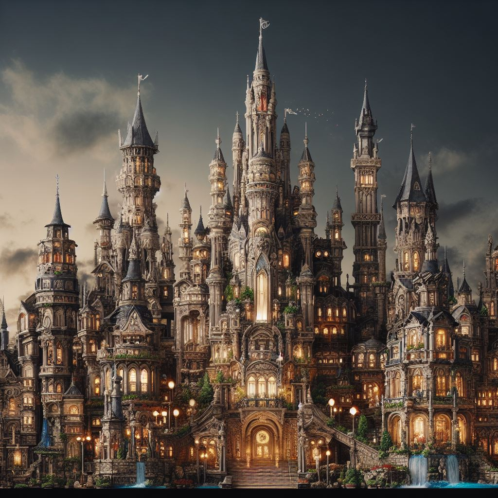
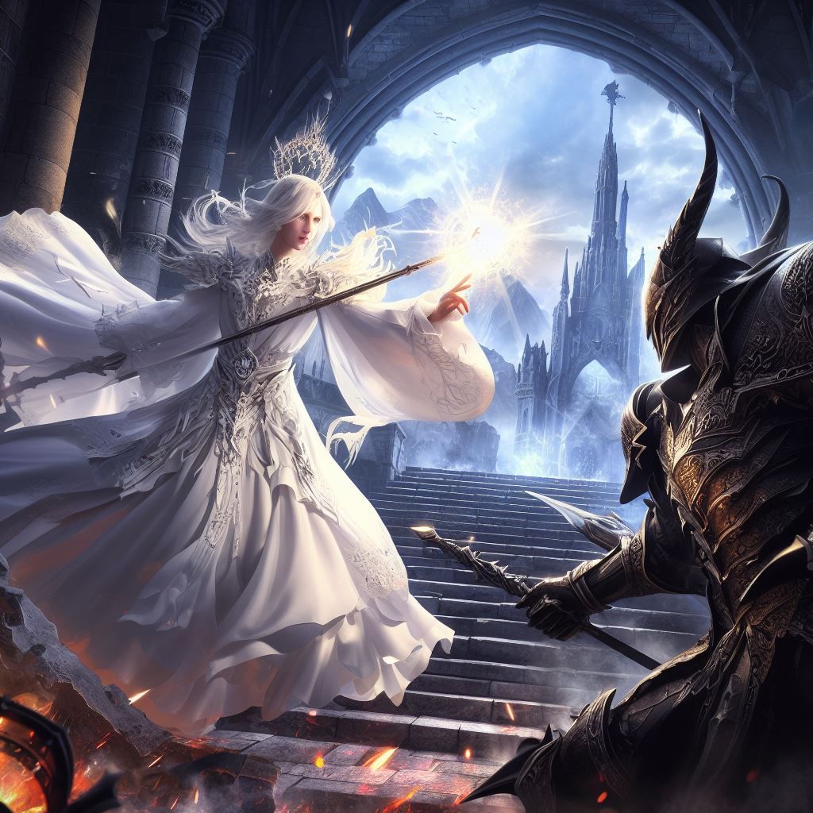
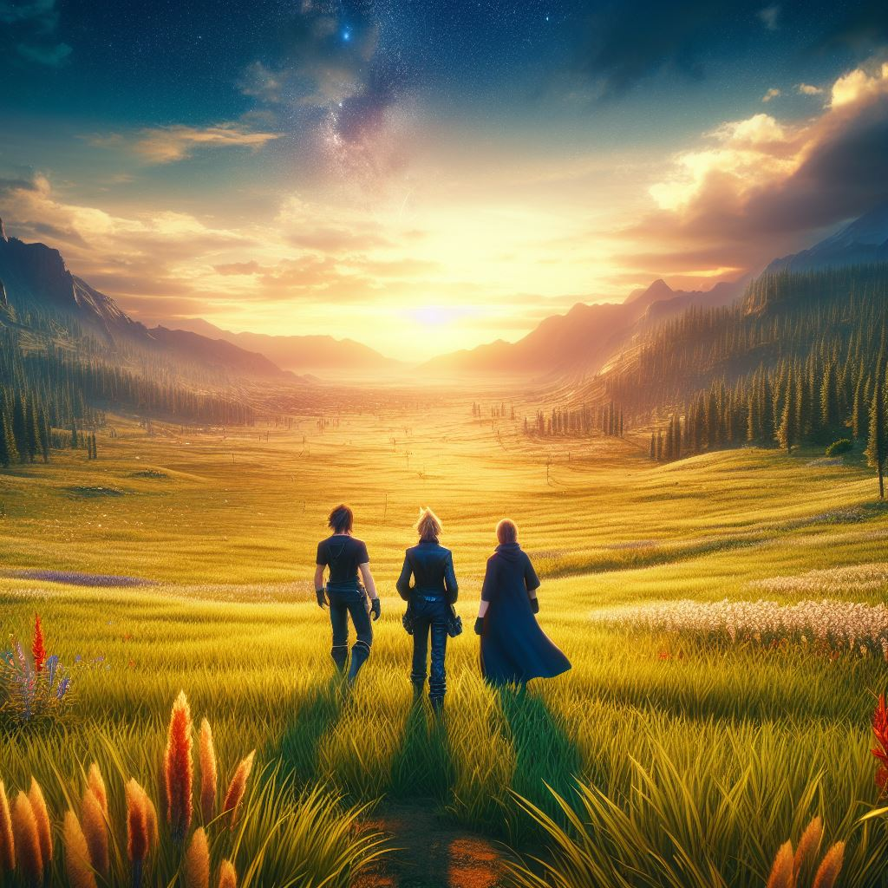

En el continente de Thaloria, una sombra siniestra se cierne sobre la tierra a medida que los Cristales de la Luz, guardianes ancestrales del equilibrio, comienzan a desvanecerse lentamente. Esta decadencia causa estragos, desencadenando desastres naturales y despertando antiguos males que yacen en lo más profundo de la tierra. Arius, un joven Caballero Oscuro renegado y marginado por su oscuro poder, es impulsado por visiones de desesperación a medida que los cristales se debilitan. Desconfiado de la Maga Blanca de renombre, Lyra, quien ha sido aclamada como la protectora de los cristales y la salvadora del reino, Arius descubre secretamente que ella es la responsable de la decadencia de los cristales, manipulándolos para su propio beneficio.

Lyra, de origen humano, solía ser una Maga Blanca respetada. Sin embargo, en su juventud, fue víctima de abusos y crueldades, lo que la llevó a desconfiar del mundo y de su propia fe en la bondad. Esta traumática experiencia transformó su perspectiva, llevándola a manipular los cristales con el fin de obtener poder y control, creyendo que solo así podría protegerse. Por otro lado, Arius, un humano marcado por la tragedia, creció en un entorno hostil y lleno de injusticias. Su inclinación hacia la oscuridad surgió cuando su familia fue atacada por fuerzas desconocidas, despertando en él un poder oscuro que no podía controlar. Marginado por la sociedad y temeroso de lastimar a quienes amaba, se convirtió en un Caballero Oscuro, utilizando su oscuridad para proteger a los demás aunque fuera aislándose.
Con el fin de encontrar una manera de salvar su mundo, Arius forma un grupo improbable con Kyra, una sanadora errante que conoce los secretos de los cristales; Ryden, un joven ilusionista cuyas habilidades podrían cambiar el curso de la batalla; y Reina, una ladrona astuta con un corazón noble. Durante su viaje, Arius y su grupo enfrentan desafíos oscuros y traiciones inesperadas mientras luchan por detener los planes de Lyra. Descubren que Lyra ha estado utilizando los cristales para alimentar sus propias ambiciones de poder, causando estragos en el mundo en lugar de protegerlo. La confrontación final tiene lugar en el Santuario de los Cristales, donde Lyra intenta absorber el último remanente de energía de los cristales para alcanzar un poder supremo. Arius y su grupo luchan valientemente contra los secuaces de Lyra, mientras la verdad sobre sus intenciones se revela ante todos.

En un giro sorprendente, Lyra revela su verdadera naturaleza maligna y desata su poder oscuro, enfrentándose directamente a Arius. En un acto de sacrificio, Arius canaliza su oscuridad para purificar los cristales, debilitando a Lyra pero consumiéndose a sí mismo en el proceso. Con Lyra derrotada y los cristales restaurados, el mundo está a salvo, pero a un costo devastador: Arius ha desaparecido, dejando a sus compañeros lidiando con la pérdida de su líder y con el peso de su sacrificio. Así, la historia culmina con el mundo liberado de la oscuridad, pero con un grupo de héroes marcados por la pérdida, reflexionando sobre el legado y el sacrificio de Arius en la lucha por la paz.
